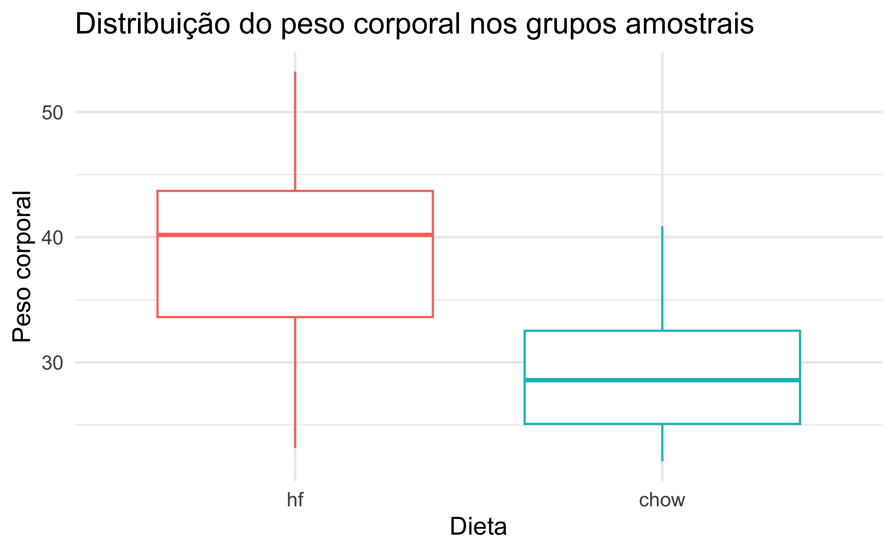
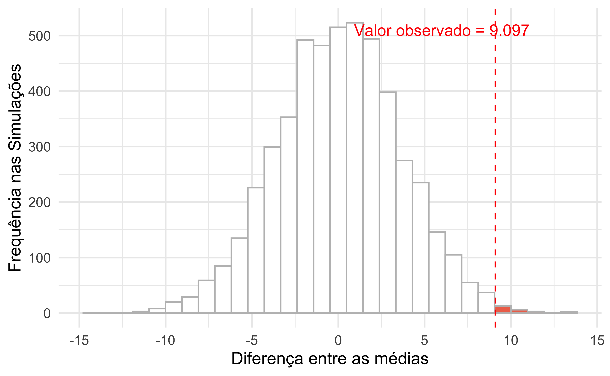
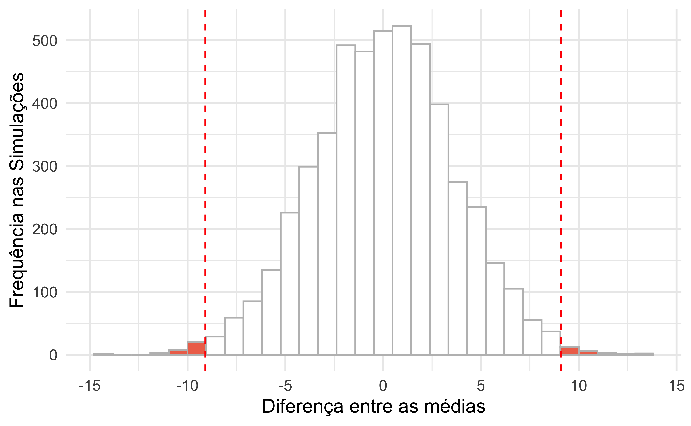

| Dieta | Média | Diferença |
|---|---|---|
| chow | 29.39 | - |
| hf | 38.49 | 9.10 |
Desvendando o valor-p: uma abordagem intuitiva
Você tem uma ideia brilhante! ✨
- Pode ser um novo tratamento, um método de ensino inovador, uma nova estratégia de marketing…
- Você acredita que sua ideia vai causar uma mudança, um efeito positivo!
A “Voz da Desconfiança”: Hipótese Nula (\(H_0\))
- Antes de comemorar, surge uma dúvida:
- “E se sua ideia não fizer diferença nenhuma?”
- “E se qualquer resultado for apenas obra do acaso ou variações normais?”
- Essa “voz†é a Hipótese Nula (\(H_0\)):
- Afirma que NÃO Hà EFEITO ou diferença real
- Sua ideia não muda nada em relação ao status quo ou a um grupo controle
O experimento e seus resultados 📊
- Você realiza um estudo para testar sua ideia:
- Compara um grupo que recebe sua intervenção com um grupo controle
- Coleta dados (ex: notas de alunos, melhora de pacientes, vendas)
- Você observa alguma diferença nos resultados entre os grupos
- Ex: Seu grupo experimental teve um desempenho 10% melhor
A grande pergunta do valor-p 🤔
- Você observa uma diferença. Mas…
- SE a sua ideia não tivesse NENHUM efeito real (ou seja, se a Hipótese Nula \(H_0\) fosse verdadeira)…
- … Qual seria a CHANCE de você observar uma diferença tão grande quanto a que você viu (ou até maior), só por puro ACASO?
Valor-p: a definição 💡
- O Valor-p É ESSA CHANCE!
- É uma probabilidade (um número entre 0 e 1, ou 0% e 100%)
- Ele quantifica o quão “surpreendente†ou “raro†seria o seu resultado se a Hipótese Nula (\(H_0\)) fosse verdadeira (ou seja, se não houvesse efeito real)
Interpretando o valor-p (Parte 1)
- Valor-p PEQUENO (ex: 0.01 ou 1%)
- Significado: “Nossa! Se minha ideia não tivesse efeito, a chance de ver um resultado tão bom (ou melhor) só por sorte seria de apenas 1%. Isso é bem raro!”
- Pensamento: Como é tão improvável obter esse resultado por acaso (se \(H_0\) fosse verdadeira), talvez a \(H_0\) esteja errada
- Implicação: Os dados parecem “estranhos†para um mundo onde nada acontece. Talvez sua ideia realmente tenha um efeito
Interpretando o Valor-p (Parte 2)
- Valor-p GRANDE (ex: 0.40 ou 40%)
- Significado: “Hmm… Se minha ideia não tivesse efeito, a chance de ver um resultado como este (ou mais extremo) só por sorte seria de 40%. Isso não é tão raro”
- Pensamento: meus resultados poderiam facilmente ter acontecido por acaso, mesmo que minha ideia não fizesse diferença
- Implicação: os dados NÃO parecem “estranhos†para um mundo onde nada acontece. Não tenho evidências fortes para duvidar da \(H_0\)
Analogia: o “medidor de estranheza†👽
- Pense no valor-p como um “Medidor de Estranheza†dos seus dados, sempre sob a suposição de que a \(H_0\) (nenhum efeito) é verdadeira
- Valor-p pequeno: Seus dados são “MUITO ESTRANHOS†para um mundo sem efeito. Talvez algo especial esteja acontecendo!
- Valor-p grande: Seus dados “NÃO SÃO NADA ESTRANHOS†para um mundo sem efeito. Encaixam-se na variação normal do acaso
O limiar decisivo: nÃvel de significância (\(\alpha\))
- Frequentemente, comparamos o valor-p a um nÃvel de significância (\(\alpha\)) pré-definido
- Comumente, \(\alpha = 0.05\) (ou 5%).
- Regra geral:
- Se valor-p < \(\alpha\): Resultado “estatisticamente significativo”. Rejeitamos \(H_0\). Há evidência de um efeito
- Se valor-p \(\ge \alpha\): Resultado “não estatisticamente significativo”. Não rejeitamos \(H_0\). Não há evidência suficiente de um efeito
O que o valor-p NÃO é! 🚫 (Muito Importante)
- NÃO é a probabilidade da Hipótese Nula (\(H_0\)) ser verdadeira
- NÃO é a probabilidade da sua ideia (Hipótese Alternativa) ser verdadeira
- Um valor-p pequeno (significante) NÃO indica o quão grande ou importante é o efeito. Apenas sugere que o efeito provavelmente não é zero
Em resumo: o papel do valor-p 🎯
- O valor-p ajuda a decidir se os resultados do seu estudo são fortes o suficiente para questionar a ideia de que “nada aconteceu†(a Hipótese Nula \(H_0\))
- Ele quantifica a probabilidade dos seus dados (ou dados mais extremos) ocorrerem SE sua intervenção não tivesse efeito real e tudo fosse obra do acaso
- É uma ferramenta para auxiliar na tomada de decisões baseadas em evidências
Lembre-se! ğŸ§
- O valor-p é uma peça do quebra-cabeça, não a imagem inteira.
- Considere sempre:
- O tamanho do efeito
- O desenho do estudo
- O contexto da sua pesquisa
- Use o valor-p com sabedoria!
Um exemplo: ratos, dietas e ganho de peso
O cenário do estudo
- Temos um biotério com 780 ratos (nossa população)
- Queremos responder a seguinte pergunta:
- Uma dieta rica em gordura realmente leva a um maior ganho de peso?
- Para isso vamos formular a seguinte hipótese:
- Ratos submetidos a uma dieta rica em gordura (hf) terão, em média, maior peso quando comparados com aqueles submetidos à dieta controle (chow)
O experimento
- Passo 1: Selecionamos aleatoriamente 20 ratos do nosso biotério (dos 780)
- Passo 2: DistribuÃmos aleatoriamente estes 20 ratos em dois grupos:
- Grupo Experimental (GE): 10 ratos recebem a dieta rica em gordura (“hf”)
- Grupo Controle (GC): 10 ratos recebem a dieta regular (“chow”)
O que encontramos na amostra?
O que encontramos na amostra?
O que encontramos na amostra?
| VD | Diferença observada | t | gl | p |
|---|---|---|---|---|
| body_weight | 9.10 | 2.66 | 18.00 | 0.02 |
A pergunta fundamental: e se a dieta não tivesse efeito?
- Vamos supor, por um momento, que a dieta NÃO TEM NENHUM EFEITO sobre o peso dos ratos
- Esta é a nossa Hipótese Nula (\(H_0\))
- Se \(H_0\) é verdadeira, qualquer diferença de peso que observamos entre dois grupos aleatórios seria puramente devido ao ACASO da seleção e atribuição dos ratos
- Pergunta-chave: “Quão provável é obter uma diferença de 9.10 (ou maior) apenas por acaso, se a dieta não faz diferença?”
Simulando o “acaso”: a ideia da distribuição nula
Construindo um mundo onde a \(H_0\) é verdadeira
- Para responder à pergunta anterior, vamos simular muitos “experimentos†onde sabemos que a dieta não tem efeito
- Usaremos os 780 ratos do biotério como nossa “população de referência†para essas simulações
- Se repetidamente pegarmos amostras aleatórias de ratos desta “população†e os dividirmos em dois grupos aleatoriamente (sem aplicar dietas diferentes de fato), qual seria a distribuição das diferenças de médias de peso?
A simulação da distribuição nula
Passo a passo da simulação:
- Loop (repetir 5000 vezes):
- Amostragem: pegue aleatoriamente 20 ratos da “população†de 780
- Atribuição aleatória: divida esses 20 ratos aleatoriamente em dois novos grupos:
- “Grupo Simulado A†(10 ratos)
- “Grupo Simulado B†(10 ratos)1
- Cálculo: calcule a diferença entre o peso médio do “Grupo Simulado A†e do “Grupo Simulado B”
- Registro: guarde essa diferença
- Resultado: teremos 5000 diferenças de médias, cada uma gerada sob a suposição de que não há efeito real da “dieta†(pois os grupos foram formados ao acaso)
Como seria o conjunto de dados?
| Exemplo de 3 amostras das 5000 simulações geradas | |||||
|---|---|---|---|---|---|
Amostra 1
|
Amostra 2
|
Amostra 3
|
|||
| Peso corporal | Grupo | Peso corporal | Grupo | Peso corporal | Grupo |
| 53.23 | b | 30.63 | a | 53.09 | a |
| 25.96 | a | 45.56 | b | 23.11 | a |
| 27.87 | a | 36.13 | b | 28.65 | a |
| 35.66 | a | 30.88 | b | 33.13 | a |
| 28.55 | a | 41.89 | a | 21.02 | a |
| 38.96 | a | 39.62 | b | 41.67 | a |
| 47.88 | a | 33.76 | a | 32.12 | b |
| 31.08 | a | 22.12 | a | 34.58 | b |
| 40.37 | b | 22.37 | a | 46.49 | b |
| 24.23 | b | 36.10 | a | 26.71 | b |
| Cada amostra tem 20 casos. Somente 10 casos são apresentados para a tabela caber no slide. | |||||
As diferenças geradas pelo puro acaso
Esta distribuição é chamada de Distribuição Nula. Ela representa como as diferenças de médias se comportariam se a dieta não tivesse efeito:
Onde se encaixa nosso resultado real: comparando o observado com o simulado
- A pergunta agora é: o quão “extremo†ou “incomum†é a diferença entre as médias observadas no experimento em relação a esta distribuição de diferenças geradas por acaso?
- Lembre-se que a hipótese pressupõe um resultado especÃfico: ratos com dieta rica em gordura terão, em média, maior peso. Nesse sentido é uma hipótese unilateral
- No gráfico a seguir, portanto, vamos nos preocupar somente com os casos que estão acima do valor observado no experimento real
Onde se encaixa nosso resultado real: visualizando o valor observado na distribuição nula
Calculando o valor-p (unilateral): quantificando o “quão extremo?”
Passo 1: olhando para a Distribuição Nula, contamos quantas das 5000 diferenças simuladas foram maiores ou iguais a nossa difernça observada (9.097).
| Quantidade | dif |
|---|---|
| 1 | 13.322 |
| 2 | 13.279 |
| 3 | 12.747 |
| 4 | 11.792 |
| 5 | 11.468 |
| 6 | 11.337 |
| 7 | 10.845 |
| 8 | 10.767 |
| 9 | 10.677 |
| 10 | 10.665 |
| 11 | 10.631 |
| 12 | 10.138 |
| 13 | 9.909 |
| 14 | 9.851 |
| 15 | 9.806 |
| 16 | 9.673 |
| 17 | 9.597 |
| 18 | 9.465 |
| 19 | 9.396 |
| 20 | 9.387 |
| 21 | 9.259 |
| 22 | 9.113 |
| 23 | 9.112 |
| 24 | 9.103 |
Calculando o valor-p (unilateral): quantificando o “quão extremo?”
Passo 2: esse total de médias (24) equivale a qual percentual dentre as 5000?
24/5000 = 0.0048
0.0048 = 0.48%
Este percentual (ou proporção) é o valor-p (unilateral).
Definição: “O valor-p é a probabilidade de observar uma diferença de médias tão grande quanto (ou maior que) a que encontramos no nosso experimento, SE a hipótese nula (de que não há efeito da dieta) fosse verdadeira”
No exemplo: há uma chance de ~0.48% de obter uma diferença de peso de 9.097 ou mais, apenas por acaso, se a dieta não tivesse efeito
Em um universo onde sabemos que essa diferença não existe, com uma chance tão pequena de encontrar a diferença de médias observado no experimento, o que é possÃvel concluir sobre as hipóteses?
O que o valor-p nos diz?
- Usamos um limiar (nÃvel de significância, α), geralmente α = 0.05 (ou 5%)
- Se o valor-p < α (ex: 0.0048 < 0.05)
- O resultado observado no nosso experimento é incomum ou “surpreendente†se a hipótese nula fosse verdadeira.
- Isso nos dá evidências para rejeitar a Hipótese Nula (\(H_0\))
- ConcluÃmos que provavelmente existe um efeito real da dieta
- Se o valor-p ≥ α (ex: 0.0696 > 0.05)
- O resultado observado não é tão incomum sob a hipótese nula. Ele poderia facilmente ter acontecido por acaso.
- Não temos evidências suficientes para rejeitar a Hipótese Nula (\(H_0\))
- Importante: Isso não significa que \(H_0\) é verdadeira, apenas que não conseguimos provar o contrário com esta amostra
Voltando aos ratos e as dietas
Conclusão para o exemplo
- O valor observado foi de 9.097
- O valor-p unilateral simulado foi de 0.0048
- Como 0.0048 < 0.05 (nosso α), rejeitamos a \(H_0\)
- Há evidências estatÃsticas (baseadas na nossa simulação e amostra) que sugerem que a dieta rica em gordura (“hf”) de fato leva a um peso corporal maior em comparação com a dieta comum (“chow”)
Hipótese bilateral: considerando extremos em ambas as direções
- Às vezes, queremos saber a probabilidade de uma diferença tão extrema quanto a observada, em qualquer direção (positiva ou negativa)
- No experimento, por exemplo, poderÃamos ter a seguinte hipótese: haverá, em média, direnças no peso entre os ratos submetidos a dietas distintas (regular - chow - e rica em gordura - hf)
- Note que não estipulamos qual dos grupos terá maior média peso. Nesse sentido, podemos ter os seguintes cenários:
- Ratos com dieta rica em gordura mais pesados e ratos com dieta regular mais leves:
- hf - chow = valor positivo
- Ratos com dieta rica em gordura mais leves e ratos com dieta regular mais pesados:
- hf - chow = valor negativo
- Ratos com dieta rica em gordura mais pesados e ratos com dieta regular mais leves:
- Numa situação como essa, temos que considerar as duas extremidades da distribuição para levarmos em conta os valores positivos e negativos
Visualizando o valor observado na distribuição nula: hipótese bilateral
O valor-p na hipótese bilateral
- Na hipótese bilateral, consideramos as diferenças simuladas que são mais extremas que o valor observado, em ambas as direções. Ou seja, contamos quantas diferenças simuladas são maiores que o valor observado (positivo) OU menores que o o simétrico negativo do nosso valor observado
- O valor-p seria: 0.0112 (1.12%)